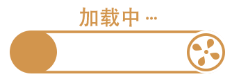

-
{{pojo.title}}
{{pojo.description}}
文化资讯 公益培训 艺术展厅 文史名人 非遗资源
资讯动态
返回


1、根据各地文化馆评估定级系统填报工作实际和近期新冠肺炎疫情防控形势，现将第五次全国文化馆评估定级系 统填报时间延期至2020年11月15日（与服务满意度测评截止时间保持一致）。请各级参评文化馆务必于11月15日之前 完成数据填报和佐证材料上传工作。请各省级文化和旅游行政部门及时传达至各级参评文化馆。
2.请各省级文化和旅游行政部门做好本辖区内“不参评文化馆”的统计工作，“不参加第五次全国文化馆评估定级 工作的文化馆名单”提交时间同时延期到2020年11月15日。请于11月15日前将“不参评文化馆名单”纸质版报送至中 国文化馆协会，电子版发送至文化和旅游部公共服务司、中国文化馆协会邮箱。
3.于填报进度较快的省份，省级文化和旅游行政部门可以根据当地工作实际，统筹安排好评估工作进度，先行开 展地市级及以下参评文化馆的评估工作。
{{entity.title}}
活动日期： {{entity.startTime|date:'yyyy-MM-dd'}}至 {{entity.endTime|date:'yyyy-MM-dd'}}
开始时间：{{entity.startTime}}
抢票时间：{{entity.applyTime}}
培训地点：{{entity.site}}
咨询电话：{{entity.phone}}
{{entity.author}}
{{entity.description}}
{{entity.name}}
{{entity.introduction}}
{{entity.title}}
{{entity.description}}{{entity.description}}